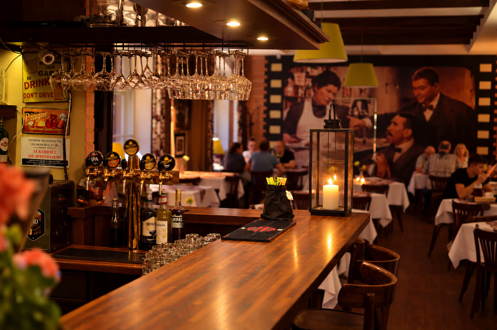
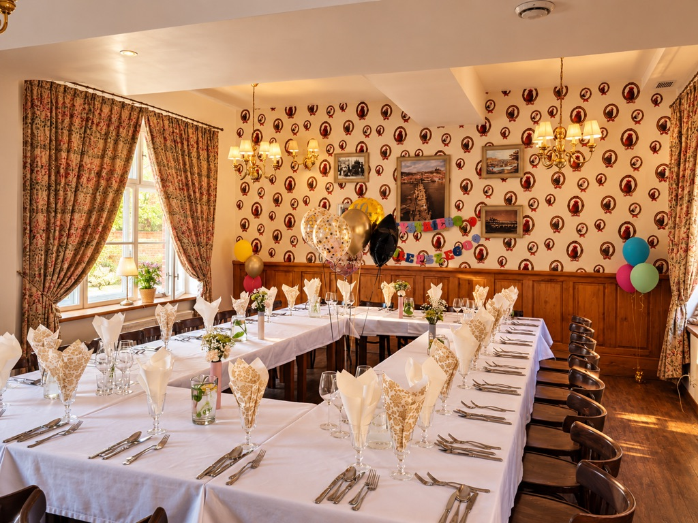

Ležák
Jasny lager
- Alk.
- 4,8%
- Ekstrakt
- 12%
Restaurant & Pub
Zapraszamy do „Český Film” - jedynej restauracji w Łodzi, gdzie oryginalne czeskie receptury ożywają w scenerii pofabrycznego kompleksu Scheiblera.
Jedno jest pewne – nakarmimy Cię po czesku, do syta i nie wyjdziesz od nas głodny.
Czesi stworzyli sobie miejsce na ziemi, gdzie można dobrze zjeść, gdzie piwo leje się strumieniem, gdzie czują się swobodnie, bezstresowo, mogą się śmiać i rozmawiać do woli. To miejsce to česká hospoda – tu życie płynie powoli.
Dokładamy wszelkich starań, aby Goście czuli się u nas, jak w czeskiej hospodzie.
Czechy to smaczna i oryginalna kuchnia. Szef kuchni wraz ze swoim zespołem dbają o jakość serwowanych dań, szukają inspiracji do tworzenia nowości.
W naszej karcie znajdziecie czeskie klasyki: nakládaný hermelín, svíčková na smetaně, pražská šunka, hovězí guláš, smažený sýr, które niezmiennie od lat cieszą się ogromnym powodzeniem wśród naszych Gości.
Ale w ofercie znajdziecie Państwo również ręcznie lepione pierogi, sałatki, dania wegetariańskie, desery, a także specjalne menu dla dzieci.
A jeśli przyjdzie Wam ochota na golonkę, to pamiętajcie, że takiej jak w restauracji „Český Film” nie zjecie nigdzie indziej – to nasz as w rękawie.
Chcąc urozmaicić nasze menu mamy również dla Państwa dania sezonowe doprawiane szczyptą nowatorskich pomysłów.
Oprócz czeskiego piwa w ofercie restauracji „Český Film” znajdziecie też inne destylaty, a wśród nich nie może oczywiście zabraknąć śliwowicy i gruszkowicy z destylarni Rudolfa Jelínka. Mamy także wina (w wersji bezalkoholowej też), wódki, whisky, drinki…
Wśród napojów prym wiedzie Kofola.
Sezonowo przygotowujemy dla Państwa ofertę z lemoniadami i letnimi mocktailami oraz na chłodniejsze dni napoje rozgrzewające.
Gdzie się piwo pije, tam się dobrze żyje
Jasny lager
Jasne, z miodowym posmakiem
Ciemne, z karmelowo-kawowymi nutami
Niefiltrowany lager pszeniczny
Górna fermentacja, cytrusowo-żywiczne aromaty
Pół kufla Medová, pół Granát
5 piw po 150 ml
Oferta piw butelkowanych zmienia się — zapytajcie kelnerów o aktualny wybór.
W miejscowości Černá Hora piwowarska tradycja sięga średniowiecza. Przez wieki browar przechodził przez ręce templariuszy, prywatnych właścicieli i spółek, rozwijał się i odbudowywał po pożarach.
Pierwsze wzmianki o czernohorskim piwie, podanym podczas uroczystości przekazania majątków.
Pierwsza pisemna wzmianka o samym browarze Černá Hora.
Browar działa jako spółka pod nazwą Pivovar Černá Hora.
Od tego roku piwo Černá Hora w łódzkiej restauracji „Český Film”.

Organizujemy spotkania biznesowe, eventy firmowe oraz rodzinne obiady i kolacje: imieninowe, urodzinowe, jubileuszowe, a także po uroczystościach ślubu, chrztu, komunii i pogrzebu. Dla grup proponujemy osobną salę Riposta.
Nasz zespół zadba o każdy szczegół spotkania — od dekoracji stołów po przygotowanie menu dopasowanego do Państwa oczekiwań i upodobań. Zapraszamy do kontaktu i omówienia szczegółów rezerwacji.

Jeśli szukasz upominku, ale nie wiesz, co będzie najlepszym pomysłem, wybierz voucher do restauracji „Český Film”.
Voucher sprawdzi się z okazji świąt, urodzin i uroczystości rodzinnych oraz jako upominek dla współpracowników lub klientów.
Voucher można zamówić telefonicznie lub mailowo.
Odwiedź nas i poczuj ten klimat.
Standardowe godziny otwarcia mogą ulec zmianie. Aktualne informacje na naszej wizytówce Google.